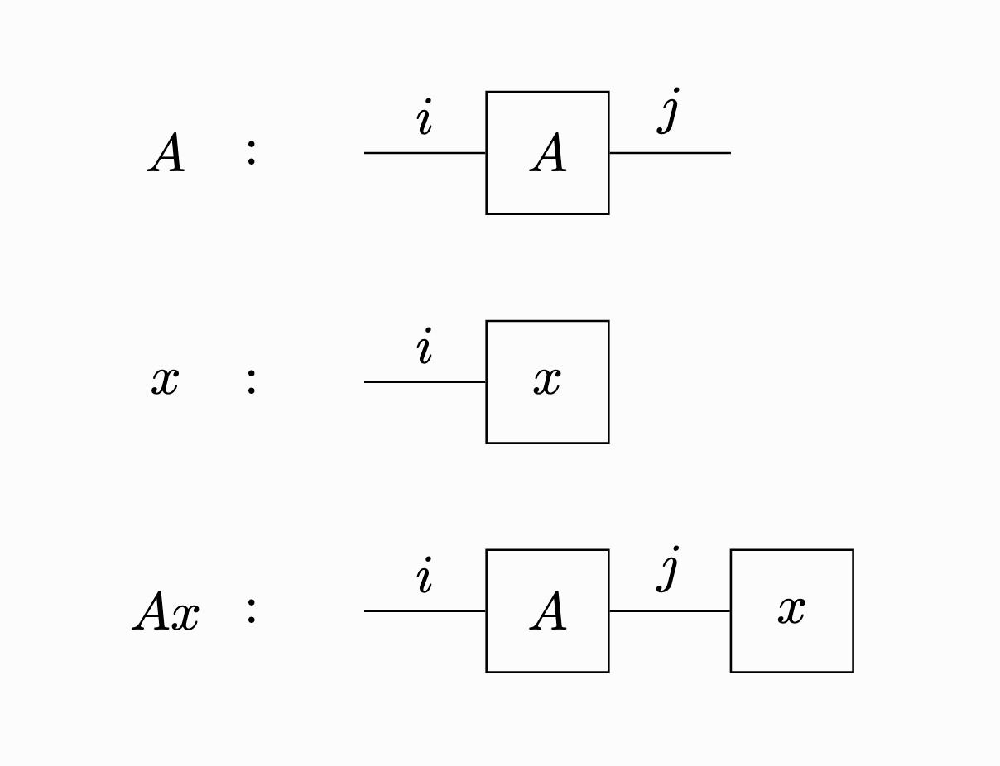
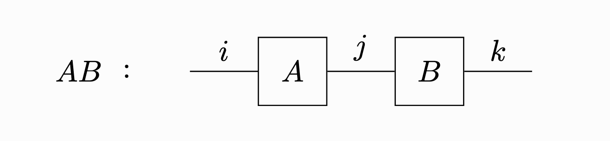
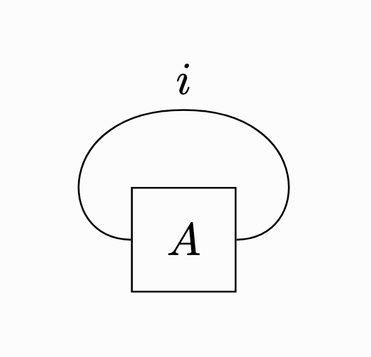
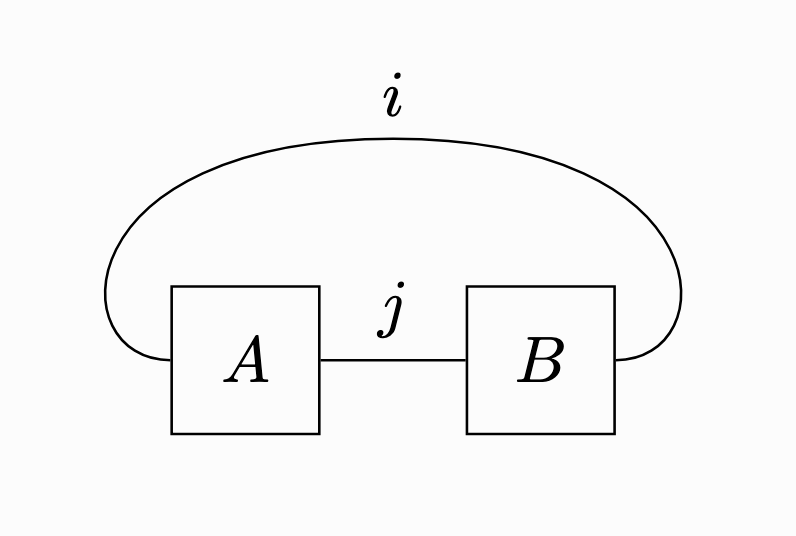
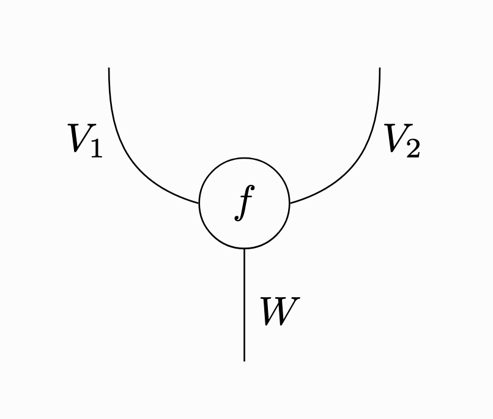
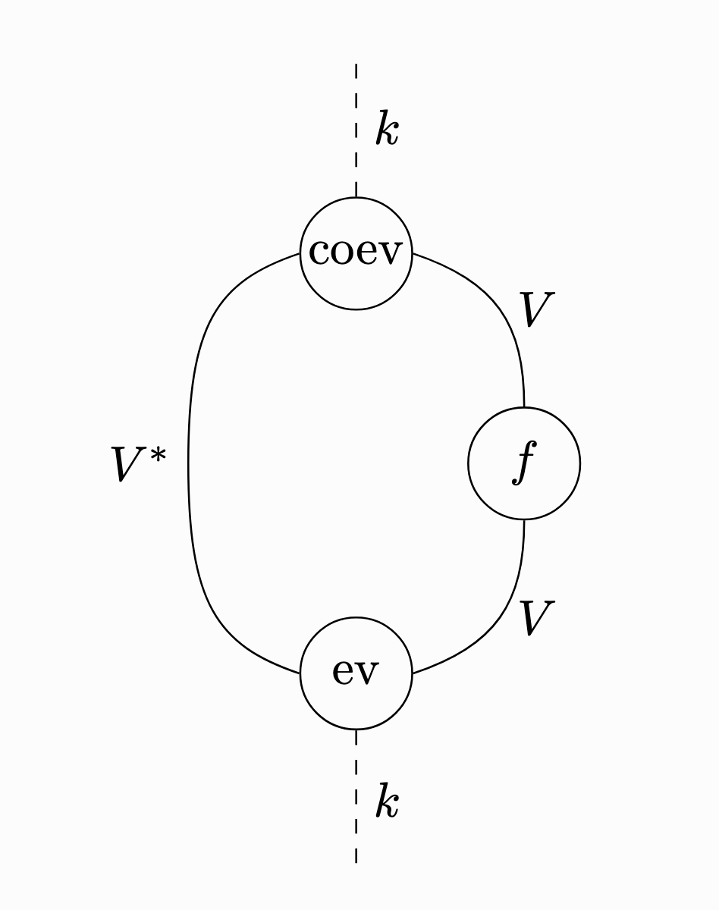

トレースって要するに何なの？
正方行列のトレースは対角成分の和として定義されます． この定義は最初に見ると少し不思議です． なぜ行列の中で対角成分だけを取り出し，なぜそれらを足すのでしょうか．
結論から言うと，トレースは要するに 「自分自身との積」 であると言い表すことができます． 別の言葉で言うと，トレースは線型写像の出力と入力を接続して 「輪っか」 を作る操作です． これらの標語の意味について，以下で詳しく説明します．
トレースの定義
まず通常の定義を確認します． 体 \(k\) 上の \(n\) 次正方行列 \(A=(a_{ij})_{1\le i,j\le n}\) に対し，\(A\) の トレース は
\[ \operatorname{tr}(A)=\sum_{i=1}^n a_{ii} \]で定義されます． つまり左上から右下に並ぶ対角成分を足したものです． 例えば
\[ A=\begin{pmatrix} 2&1&0\\ 3&-1&4\\ 5&2&7 \end{pmatrix} \]ならば \(\operatorname{tr}(A)=2+(-1)+7=8\) です．
定義だけを見ると，「対角成分を足す」という操作は不自然に感じられるかもしれません． 行列には他にもたくさんの成分があるのに，なぜ \(a_{11},a_{22},\ldots,a_{nn}\) だけを取り出すのでしょうか． この疑問に答える鍵は 行列の積 の概念にあります．
行列の積
\(m\times n\) 行列 \(A=(a_{ij})_{1\le i\le m,1\leq j\le n}\) と \(n\) 次元縦ベクトル \(x=(x_i)_{1\leq i\le n}\) の積は
\[ (Ax)_i=\sum_{j=1}^n a_{ij} x_j \]で与えられます． この式を以下のように図示してみましょう．

言葉で表すと次のようになります．
- 行列 \(A\) は左右に紐が一本ずつ伸びた箱として図示する．左の紐が行の添え字を表し，右の紐が列の添え字を表す．
- ベクトル \(x\) は左に紐が一本伸びた箱として図示する．左の紐は行の添え字を表す．
- 紐をつなげることは，対応する添字を動かして和を取ることを表す．
この最後の操作，つまり接続された添え字について和を取る操作を 縮約 と呼びます．
行列の積についても同じような図示を行うことができます． \(m\times n\) 行列 \(A=(a_{ij})_{1\le i\leq m,1\leq j \leq n}\) および \(n\times\ell\) 行列 \(B=(b_{ij})\) に対して，それらの積 \(AB\) は
\[ (AB)_{ik}=\sum_{j=1}^n a_{ij}b_{jk} \]で与えられるのでした．この式は以下のような図で表すことができます．

同様に三つの行列の積 \(ABC\) や，二つの行列と一つのベクトルの積 \(ABx\) などについても，成分の計算式を図で表すことができます．
トレースは「輪っか」である
さて，\(n\) 次正方行列 \(A=(a_{ij})_{1\le i,j\le n}\) を考えます． 上で述べたように，これは一つの箱から二本の紐が出ている図に対応しています． この二本の紐をつないでループを作ってみましょう．

すると対応する計算式は，接続された添字 \(i\) にわたって和をとるので
\[ \sum_{i=1}^n a_{ii} \]となります． これはまさに \(A\) のトレースの定義そのものです！ つまりトレースとは，行列 \(A\) の入力側の添字と出力側の添字を，行列の積のように縮約したものです． これが冒頭に述べた 「トレースは自分自身との積である」 という標語の意味です．
このようにトレースを「輪っか」として捉えると，\(m\times n\) 行列 \(A\) と \(n\times m\) 行列 \(B\) に対して
\[ \operatorname{tr}(AB)=\operatorname{tr}(BA) \]が成り立つことも自然に解釈できます． これは図で書くと，「\(B\) がループの上側を通って \(A\) の左側に移動できる」という事実に対応しています．

より一般に，行列 \(A_1,\dots,A_N\) に対して積 \(A_iA_{i+1}\ (i=1,2,\dots,N)\) が定義されるとします． ただし \(A_{N+1}=A_1\) と約束します． このとき上と同じ説明によって
\[ \operatorname{tr}(A_1A_2\cdots A_{N-1}A_N)=\operatorname{tr}(A_NA_1A_2\cdots A_{N-1}) \]という 巡回置換不変性 が得られます． またこの性質から，トレースが行列の相似で不変であることもすぐに分かります． 実際，\(n\) 次正方行列 \(A\) と可逆行列 \(P\) に対して
\[ \operatorname{tr}(P^{-1}AP) =\operatorname{tr}(PP^{-1}A) =\operatorname{tr}(A) \]となります． 図を描いてみると，これは「 \(P\) と \(P^{-1}\) がループの上で隣り合っているので打ち消せる」という単純な原理に対応していることがわかります．
基底によらない定義
ここまでの説明では行列の成分表示を使いましたが，実はトレースは成分を用いずに，抽象的な線型写像の言葉だけで定義できます． 有限次元ベクトル空間 \(V\) について，その双対空間を \(V^*\) とすると，標準的な同型
\[ V^*\otimes V \cong \operatorname{End}(V) \]があります．具体的には，単純テンソル \(\varphi\otimes v\in V^*\otimes V\) を線型写像
\[ x\mapsto \varphi(x)v \]に対応させます． この対応を線型に拡張することで，\(V^*\otimes V\) と \(\operatorname{End}(V)\) との間の同型が得られます． これを用いて 余代入 と呼ばれる線型写像 \(\operatorname{coev}\colon k\to V^*\otimes V\) を次のように定義します：
\[ \operatorname{coev}\colon k\xrightarrow{1\mapsto \mathrm{id}_V} \operatorname{End}(V)\cong V^*\otimes V. \]また 代入 と呼ばれる線型写像 \(\operatorname{ev}\colon V^*\otimes V\to k\) を次のように定義します：
\[ \operatorname{ev}\colon V^*\otimes V\to k;\quad \varphi\otimes v\mapsto \varphi(v). \]このとき線型写像 \(f\colon V\to V\) に対し，以下の合成は \(\operatorname{tr}(f)\) 倍写像に一致します：
\[ k \xrightarrow{\operatorname{coev}} V^*\otimes V \xrightarrow{\mathrm{id}\otimes f} V^*\otimes V \xrightarrow{\operatorname{ev}} k. \]上の主張を確かめてみましょう．\(V\) の基底 \(e_1,\ldots,e_n\) とその双対基底 \(e_1^*,\ldots,e_n^*\) を取り，この基底に関する線型写像 \(f\colon V\to V\) の表現行列を \(A=(a_{ij})_{1\le i,j\le n}\) とします． このとき，恒等写像 \(\mathrm{id}_V\colon V\to V\) に対応する \(V^*\otimes V\) の元は
\[ \sum_{i=1}^n e_i^*\otimes e_i \]で与えられます． よって余代入は \(1\) をこの元に送ります． さらに \(\mathrm{id}\otimes f\) を適用すると
\[ \sum_{i=1}^n e_i^*\otimes f(e_i) = \sum_{i=1}^n\sum_{j=1}^n e_i^*\otimes a_{ji}e_j \]となり，代入を適用すると \(e_i^*(e_j)=\delta_{ij}\) より
\[ \sum_{i=1}^n a_{ii} = \operatorname{tr}(A) \]が得られます． 以上で，前述の合成写像 \(k\to k\) が \(\operatorname{tr}(f)\) 倍写像に等しいことがわかりました．
ストリング図で見るトレース
前々節で見た「輪っか」としてのトレースの解釈と，前節で見た代入・余代入を用いたトレースの定義は，一見すると全く違うように見えます． しかし実は，後者の定義を「ストリング図」と呼ばれる方法で図示すると，まさに「輪っか」の姿が現れます．
ストリング図は，ベクトル空間の圏のように「テンソル積」（モノイダル構造）が定まっている圏において，その対象や射を図示するための方法です． ストリング図の書き方の厳密なルールについてはここでは深入りしません． 以下のルールのみ押さえておけば大丈夫です．
- ベクトル空間は縦線で表す．
- ベクトル空間のテンソル積は縦線を横に並べることで表す．
- 線型写像は縦線を上から下につなぐ継ぎ目で表す．
- ベクトル空間 \(k\) を表す縦線は省略する．
例えばベクトル空間 \(V_1,V_2,W\) に対し，線型写像 \(f\colon V_1\otimes V_2\to W\) は次のようなストリング図で表されます．

これを踏まえて，前節で述べたトレースの抽象的な定義
\[ k \xrightarrow{\operatorname{coev}} V^*\otimes V \xrightarrow{\mathrm{id}\otimes f} V^*\otimes V \xrightarrow{\operatorname{ev}} k \]をストリング図で書くと次のようになります．

\(f\) から出た二本の紐が代入と余代入によって曲げられて「輪っか」になっている様子が見て取れると思います． つまり，前節で述べたトレースの定義は，実は「輪っか」という直感をストリング図によって圏論的な言葉に直したものだったのです．
不動点とトレース
数学においてトレースが現れる重要な例として，Lefschetz 跡公式 というものがあります（「跡」はトレースの和訳です）． \(M\) を向きづけられたコンパクト多様体とし，滑らかな写像 \(f\colon M\to M\) を考えます． 点 \(x\in M\) であって \(f(x)=x\) を満たすものを，\(f\)の 不動点 といいます． 技術的な仮定として，\(f\) の不動点は集積していないとしましょう． このとき Lefschetz 跡公式は，\(f\) の不動点にわたる「局所不動点指数」と呼ばれる符号付きの量の総和が
\[ \sum_{i=0}^\infty (-1)^i \operatorname{tr}(f^*|H^i(M;\mathbb{Q})) \]で与えられることを主張しています． ただし \(f^*\) は \(f\) がコホモロジー群に誘導する写像
\[ f^*\colon H^i(M;\mathbb{Q})\to H^i(M;\mathbb{Q}) \]です． 大雑把に言えば，Lefschetz 跡公式は「不動点」と「トレース」を結びつける公式といえます．
このようにトレースが不動点と関わることは，前節までで述べた「入力と出力の縮約」という描像からも自然に見えてきます． 単純な例として，有限集合の自己写像について考えてみましょう．
\[ X=\{1,2,\ldots,n\} \]とし，自己写像 \(f\colon X\to X\) を考えます． 元 \(i\in X\) を \(k^n\) の標準基底ベクトル \(e_i\) と同一視すると，\(f\) は線型写像 \(k^n\to k^n\) を誘導します． この線型写像の表現行列を \(A_f\) とします． 具体的には，\(A_f=(a_{ij})_{1\le i,j\le n}\) と表すと
\[ a_{ij}= \begin{cases} 1&(i=f(j))\\ 0&(i\neq f(j)) \end{cases} \]です．この行列のトレースを取ると
\[ \operatorname{tr}(A_f) =\sum_{i=1}^n a_{ii} =\#\{i\in X\mid f(i)=i\} \]となり，\(f\) の不動点の個数が出てきます． この計算では，トレースの定義で「入力と出力を縮約」することと，不動点の定義で「入力と出力の一致」を要求することがちょうど対応しています． したがって，ある意味では「トレースは不動点の個数の一般化である」とも言えるでしょう．
謝辞
この記事で強調した「トレースとは自分自身との積である」というスローガンは東田京介さんの受け売りです．良い標語を教えてくださったことに感謝します．